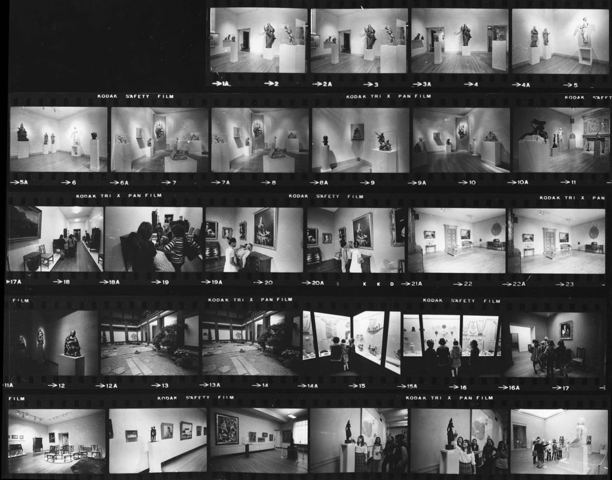

Design Heritage XR
The Design Heritage Platform is a collaborative online gallery and XR tool for collecting, sharing, and curating 3D captures of Heritage places and spatial designs. It allows users to ①upload and manage multimedia content including 3D mesh models with textures, images, and videos, ②create narratives by defining animated camera paths and manipulating adjustable parameters(i.e., texture, position) of each object type, ③design and exhibit Web-based interactive VR/AR experiences
-
Role
AR Developer
Front-End Developer
UIUX Designer
- Director Takehiko Nagakura
- Team Wenzhe Peng (Developer Leader)
- Link
OVERVIEW
To get started, We created a digital archive of featured musuem spaces (i.e., Temple room, Japanese Garden Courtyard,
Tea Room)and exhibition objects containing textured models, photos, and metadata.
01 | Textured models
The textured model in VR is created byphotogrammetry or photo baking technology.


02 | Photos
We collected historical photos of musuem spaces and captured visiting video at the present to reveal and reconstruct a chronological scene transformation in MFA. Photos and videos are important resources and evidences reveal traces in the past.
